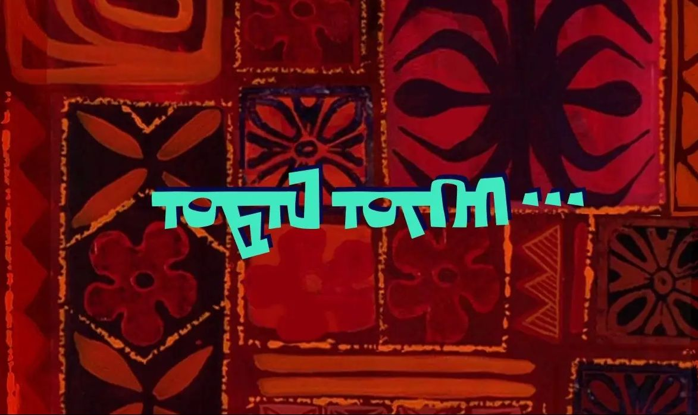
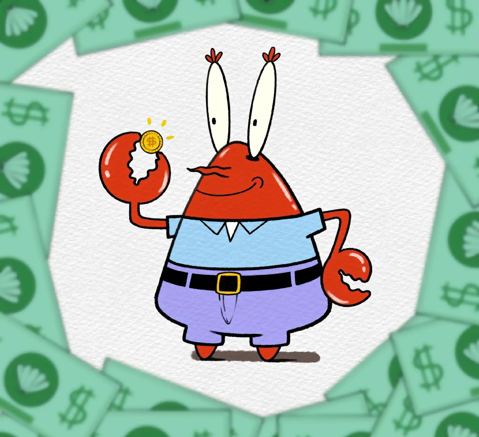
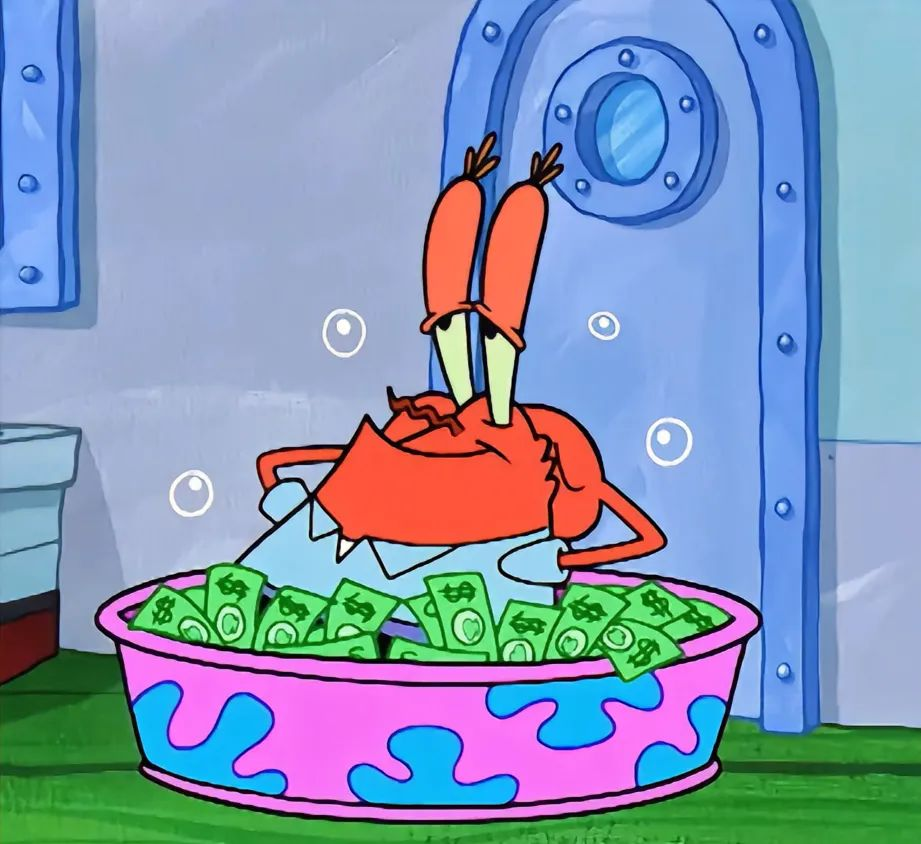

|  |
|
返回 | |
蟹老板空间 |
|||
|  |  | ||
蟹老板的两面 |
|||
蟹老板（Captain Eugene H. Krabs），原名尤金蟹，是《海绵宝宝》中一个非常重要的角色，他是蟹堡王餐厅的老板，以下是对他角色的综合分析： 1. **对金钱的极度热爱**：蟹老板视金钱如生命，经常为了一块钱而去冒生命危险，极为自私。他甚至在失眠时，都会通过数钱来帮助自己入睡。他对每一分钱都极其敏感，有一次，他为了取出下水管里的硬币，不惜放下工具。 2. **商业头脑与经营策略**：蟹老板具有敏锐的商业头脑，他多次向员工宣导要有时间观念，因为“时间就是金钱”。只要发现能发短财的产品，就会忽视老本美味蟹堡并转换目标，如美味热狗和蟹蟹水果报。 3. **对员工的态度**：蟹老板作为老板，有时候会教海绵宝宝和派大星一些道理，但也常常抢走章鱼哥和海绵宝宝的奖金，似乎从未给他们加过薪。 4. **与女儿珍珍的关系**：尽管蟹老板非常吝啬，但他对女儿珍珍的爱是无私的。珍珍是一只鲸，这与常规的认知相反，显示了蟹老板温情的一面。 5. **与痞老板的竞争**：蟹老板与海之霸的老板痞老板是死对头，为了美味蟹堡秘方常常明争暗斗，这展现了他作为老板的坚持和策略。 6. **守旧与念旧**：蟹老板十分念旧，在他出售蟹堡王后，他回到蟹堡王发现，生产规模扩大但面目全非，将他最喜欢的收银台变成电子收银台更是让他愤怒地捣毁了餐厅。 7. **道德与良心**：虽然蟹老板在经济上非常严格，但他也有温情和良心的一面。在一次蟹堡王以昂贵价格被卖出去时，发现新的老板为顾客制造黑心汉堡，因而后悔自己卖出了蟹堡王，为顾客的安全重新将蟹堡王买回来。 8. **个人习惯与厌恶**：蟹老板一生最痛恨三件事情：小孩在他家的院子玩、花钱、有人碰他的调温器。 蟹老板这个角色虽然以吝啬和对金钱的极度热爱而闻名，但他的行为和决策往往复杂且充满矛盾，这使得他成为一个独特且深刻的角色。 |
|||